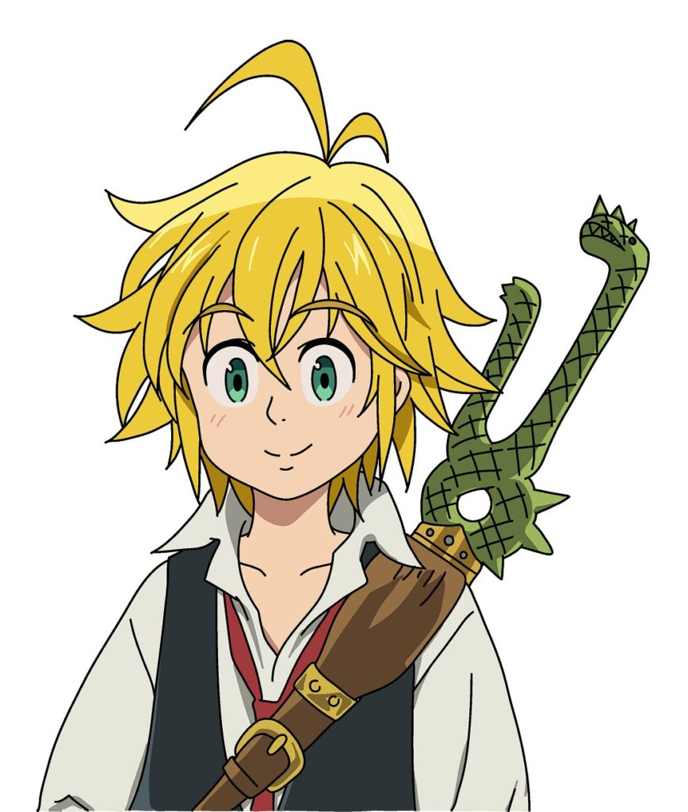
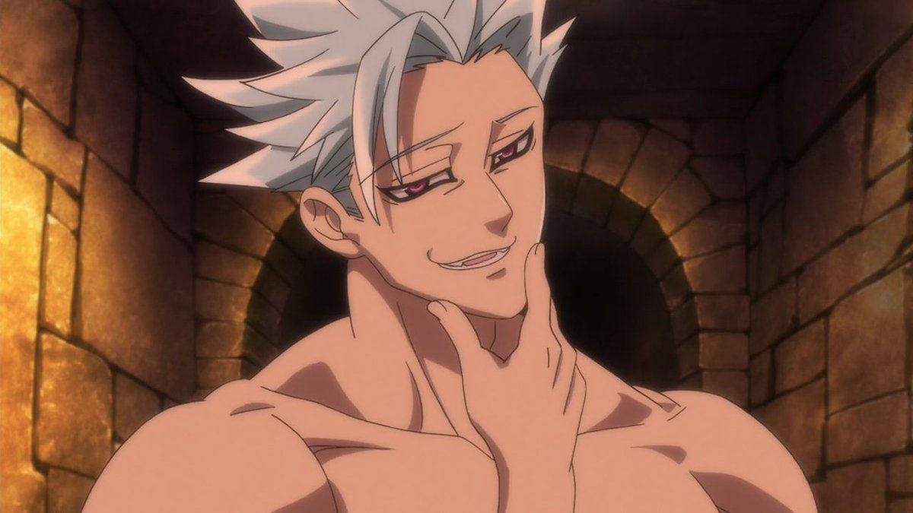
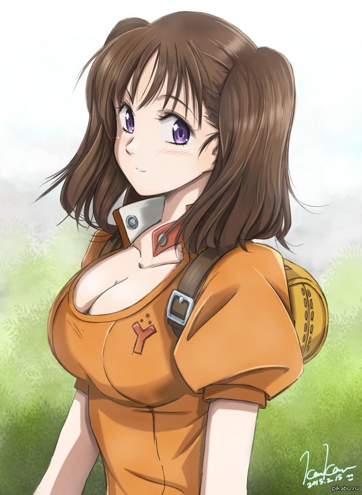
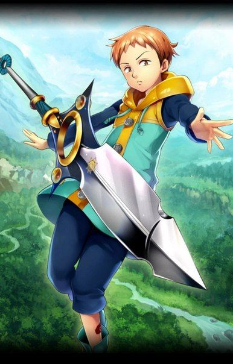
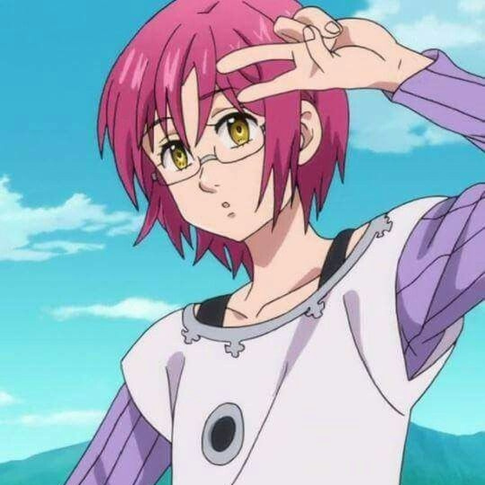
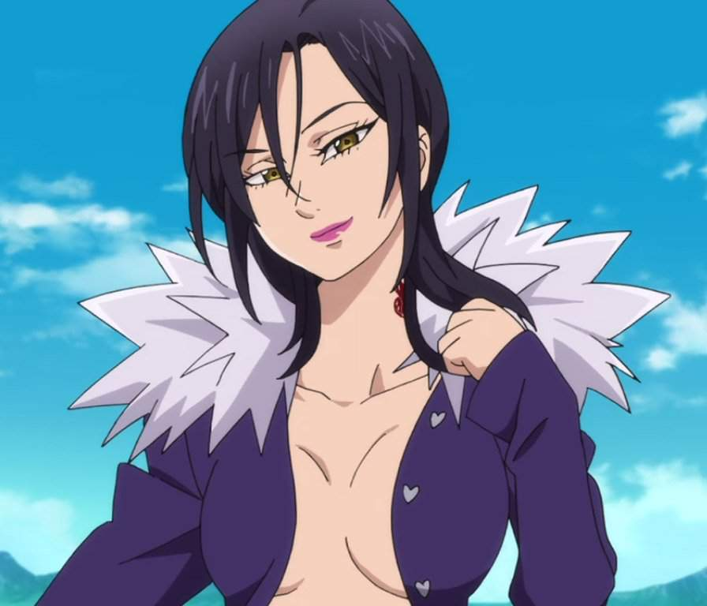
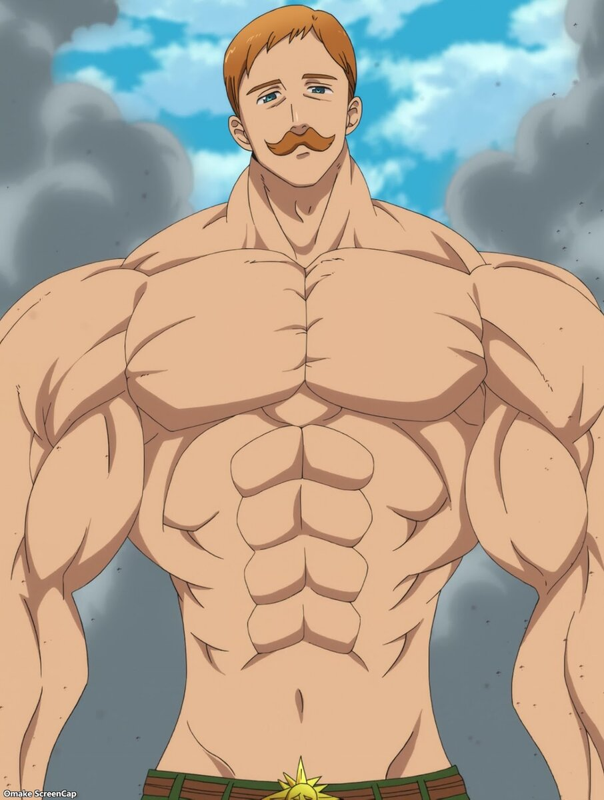

Семь смертных грехов (аниме)
Орден Святых Рыцарей - надежда и опора государства Лионесс, однако это лишь верхушка айсберга - на самом деле рыцари узурпировали власть, взяв в плен королевский род, а во всех несчастьях обвинили отряд из семерых прославленных воинов, вынудив их долгие годы скитаться по миру отрезанным друг от друга. Но пришло время освободить семью короля и раскрыть обман рыцарей, а это значит общий сбор для самой разыскиваемой команды королевства - Семи Смертных Грехов. «Nanatsu no Taizai» - образец того, как можно сделать прекрасный сёнен с отличной постановкой битв, имея на руках ещё медленно развивающуюся вселенную и не так уж много сюжетного материала.
Мелиодас
Мелиодас「メリオダス Meriodasu」— капитан Семи Смертных Грехов, известный как "Грех Дракона - Гнев". Хозяин известного бара Шляпа Кабана и главный герой всего сюжета. Его священная реликвия — Демонический меч Лоствейн. Основная способность Мелиодаса — Полное отражение. Во время Арки Великого Бойцовского Фестиваля выясняется, что Мелиодас бывший лидер Десяти Заповедей.
Фандом страница Мелиодаса здесь
Бан
Бан「バン Ban」 также известен как "Лисий Грех Жадности" — один из членов Семи Смертных Грехов. После расформирования группы был заточен в тюрьме Баст, но сбежал, когда узнал, что Мелиодас жив. Помимо своего бессмертия, он известен своими способностями к краже.
Фандом страница Бана здесь
Диана
Диана「ディアンヌ Diannu」- одна из Семи Смертных Грехов, Грех Змеи - Зависть. Её священная реликвия — Гидеон. Она очень талантлива по мнению Матроны.
Фандом страница Дианы здесь
Кинг
Кинг「キング Kingu」- один из Семи Смертных Грехов, известный как Грех Гризли — Лень. Настоящее имя — Король Фей Арлекин (妖精王ようせいおうハーレクイン, Yōsei-Ō Hārekuin). Будучи Королём Фей имеет духовное копьё — Частифол, который может принимать различные формы. Кинг управляет им с помощью своей способности «Катастрофа».
Фандом страница Кинга здесь
Гаутер
Гаутер「ゴウセル Gouseru」— кукла, участник «Семи Смертных Грехов» и бывший член «Десяти Заповедей».Больше известен как Грех Козла — Похоть или Бескорыстие Гаутер.
Фандом страница Гаутера здесь
Мерлин
Мерлин「マーリン Mārin」 является членом Семи Смертных Грехов и известна как Грех Кабана — Обжорство. Она является величайшим магом в Британии. Её Священная Реликвия — это Утренняя Звезда, Алдан, которая выглядит как летающий шар. Её главная способность — «Бесконечность». Имя «Мерлин» — это на самом деле псевдоним, а её настоящее имя не может быть произнесено или воспринято человеком. Местом рождения является давно разрушенный Город Мудрецов, а её отец являлся правителем этого города.
Фандом страница Мерлин здесь
Эсканор
Эсканор「エスカノール Esukanōru」 — человек, участник «Семи Смертных Грехов» и носитель милости «Солнечный Свет».Больше известен как Грех Льва — Гордыня.
Фандом страница Эсканора здесь
))))))))